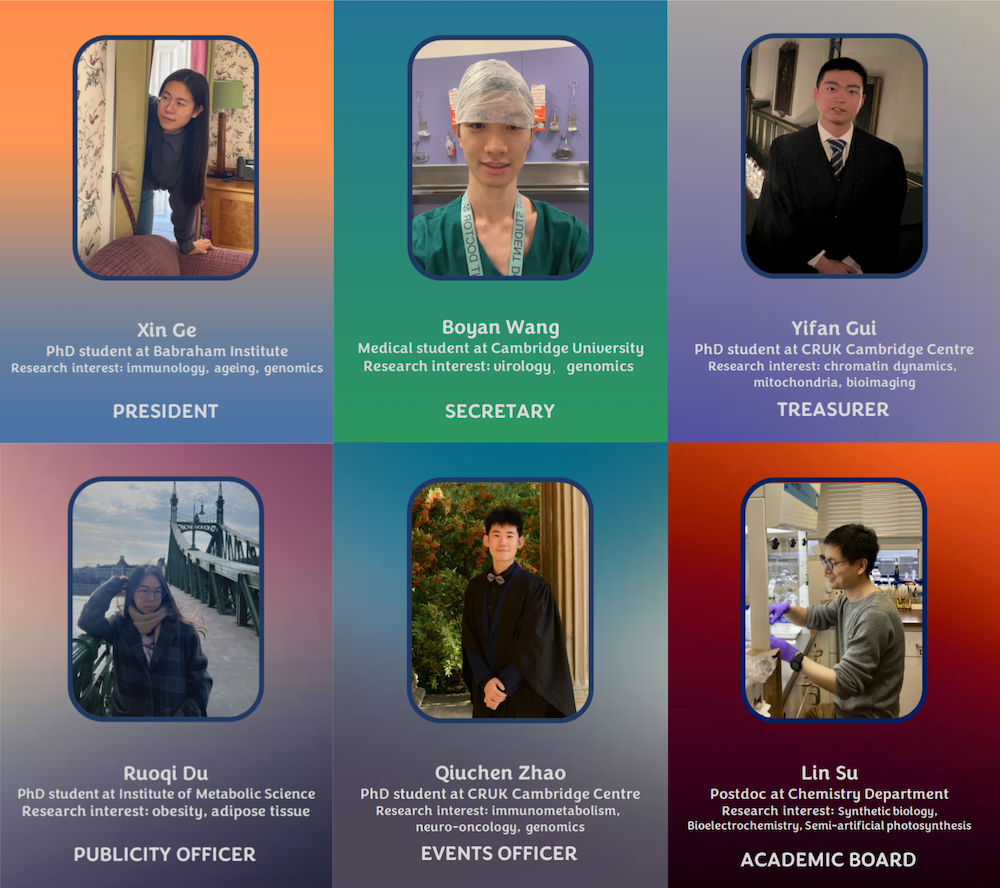

CamLS Annual Symposium 2024
April 19, 2024
CRUK Cambridge Institute, University of Cambridge
CRUK Cambridge Institute, University of Cambridge
| Home | Registration | Program | Directions | Previous events |
The Cambridge Life Science Network Annual Symposium serves as a critical platform for researchers, scientists, industry professionals, and thought leaders in the life sciences in Cambridge.
With a focus on cutting-edge research presentations, interactive panel discussions, networking opportunities, and an exhibition showcase, this symposium fosters innovation and collaboration within the life sciences community. We are aiming at all disciplines of life science sectors, and we expect an audience from all fields and communities under the realm of life science.
Cambridge Life Science Network (CamLS, pronounced aka ‘camels’) is a dynamic student society at the University of Cambridge, dedicated to fostering collaboration and knowledge exchange among life science researchers across various disciplines. From medicine and immunology to piRNA, oncology, and obesity, our society strives to create a vibrant platform where diverse perspectives converge to address pressing challenges and explore cutting-edge innovations in the field.
|  |

|

|

|

|

|